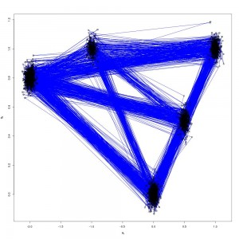
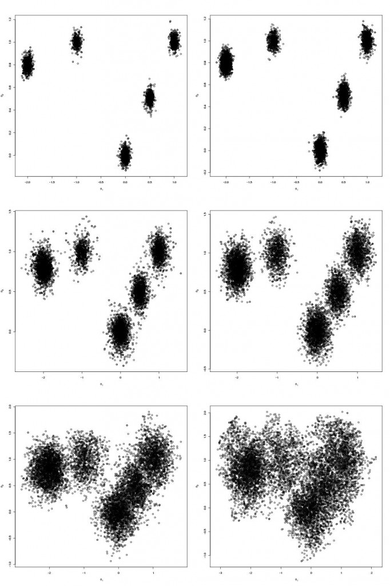

{kind=link}
My office computer recently got a really nice upgrade and now I have 8 cores on my desktop to play with. I also at the same time received some code for a Gibbs sampler written in R from my adviser. I wanted to try a metropolis-coupled markov chain monte carlo, 
Target Density
First one needs to write a density one wishes to sample from
logdensity<-function(theta){
#Distribution one wishes to sample from here.
#It may be more convinient to pass a theta as a list
sigma2=0.001;
Sigma=matrix(0,2,2);
Sigma[1,1]=sigma2;
Sigma[2,2]=sigma2;
density=dmvnorm(theta,c(0,0),Sigma)+dmvnorm(theta,c(-2,0.8),Sigma)+dmvnorm(theta,c(-1,1),Sigma)+dmvnorm(theta,c(1,1),Sigma)+dmvnorm(theta,c(0.5,0.5),Sigma);
return(log(density))
}
The density I chose was a mixture of 5 well-separated bi-variate Normals. One should note that it is probably cleanest to pass all the arguments to this function as a list theta. It wasn’t really necessary in this case but if you have a posterior distribution with a number of parameters of varying dimension then it would be much nicer as a list. In a future blog post I may change the target density to be the energy distribution of a Lennard-Jones cluster.
Parallel Tempering Algorithm
This too is written as a function because Rmpi allows you to pass the function to all slaves and execute it. It was basically the easiest way of writing it for Rmpi.
temper<-function(niter,Bmin,swap.interval){
rank=mpi.comm.rank();
size=mpi.comm.size();
swap=0;
swaps.attempted=0;
swaps.accepted=0;
#Higher ranks run the higher "temperatures" (~smaller fractional powers)
B=rep(0,size-1);
for(r in 1:size-1){
temp=(r-1)/(size-2);
B[r]=Bmin^temp;
}
#Create a list for proposal moves
prop=rep(0,2);
theta=matrix(0,niter,2)
for(t in 2:niter){
for(c in 1:length(prop)) prop=theta[t-1,c]+rnorm(1,0,0.1);
#Calculate Log-Density at proposed and current position
logdensity.current=logdensity(theta[t-1,])
logdensity.prop=logdensity(prop);
#Calculate log acceptance probability
lalpha=B[rank]*(logdensity.prop-logdensity.current)
if(log(runif(1))<lalpha){
#Accept proposed move
theta[t,]=prop;
logdensity.current=logdensity.prop;
}else{
#Otherwise do not move
theta[t,]=theta[t-1,];
}
if(t%%swap.interval ==0){
for(evenodd in 0:1){
swap=0;
logdensity.partner=0;
if(rank%%2 == evenodd%%2){
rank.partner=rank + 1;
#ranks range from 1:size-1. Cannot have a partner rank == size
if(0<rank.partner && rank.partner<size){
#On first iteration, evens receive from above odd
#On second iteration, odds receive from above evens
logdensity.partner<-mpi.recv.Robj(rank.partner,rank.partner);
lalpha = (B[rank]-B[rank.partner])*(logdensity.partner-logdensity.current);
swaps.attempted=swaps.attempted+1;
if(log(runif(1))<lalpha){
swap=1;
swaps.accepted=swaps.accepted+1;
}
mpi.send.Robj(swap,dest=rank.partner,tag=rank)
}
if(swap==1){
thetaswap=theta[t,];
mpi.send.Robj(thetaswap,dest=rank.partner,tag=rank)
theta[t,]=mpi.recv.Robj(rank.partner,rank.partner)
}
}else{
rank.partner=rank-1;
#ranks range from 1:size-1. Cannot have a partner rank ==0
if(0<rank.partner && rank.partner<size){
#On first iteration, odds send to evens below
#On second iteration, evens sent to odds below
mpi.send.Robj(logdensity.current,dest=rank.partner,tag=rank);
swap=mpi.recv.Robj(rank.partner,rank.partner);
}
if(swap==1){
thetaswap=theta[t,];
theta[t,]=mpi.recv.Robj(rank.partner,rank.partner);
mpi.send.Robj(thetaswap,dest=rank.partner,tag=rank);
}
}
}
}
}
return(theta)
}
The bulk of the above code is the communication of each processor with its next nearest neighbors. Metropolis moves will be attempted every swap.interval iterations, an argument one can pass to the function. When this code block is entered, even rank processors will partner with their higher ranked odd neighbours (they have a high rank so higher temperature i.e. smaller fractional power – a more “melted down” target density). The higher odd partners will send their lower even partners the value of their density and then the lower even partners will calculate an acceptance probabilty. If the move succeeds the lower rank even processors send their higher rank odd processors a binary swap=1 telling the higher rank odd processors that a send/receive procedure will occur. The lower even rank sends the higher odd rank its parameters and then subsequently the higher odd rank sends its lower even rank its parameters. In this way a metropolis move between processors is achieved. Next, odd rank processors form partners with their higher even ranked neighbours (because we need to swap with processor rank 1, the target density). The same procedure occurs as before but swapping odd for even. More visually, first swaps are attempted between 2-3, 4-5, 6-7 etc and then swaps are attempted between 1-2, 3-4, 5-6. This is almost like a merge-sort style algorithm. One can see how the parameters could be passed from 3 down to 2 and then from 2 down to 1. The main point is that each processor attempts a swap with its nearest-neighbours, the one above and the one below, every swap.interval iterations.
With these functions defined one can now proceed to set up the mpi communicator/world.
Rmpi
First spawn some slaves.
library(Rmpi) mpi.spawn.Rslaves(nslaves=6)
If it worked, you should see something like this:
> mpi.spawn.Rslaves(nslaves=6) 6 slaves are spawned successfully. 0 failed. master (rank 0, comm 1) of size 7 is running on: cabbage slave1 (rank 1, comm 1) of size 7 is running on: cabbage slave2 (rank 2, comm 1) of size 7 is running on: cabbage slave3 (rank 3, comm 1) of size 7 is running on: cabbage slave4 (rank 4, comm 1) of size 7 is running on: cabbage slave5 (rank 5, comm 1) of size 7 is running on: cabbage slave6 (rank 6, comm 1) of size 7 is running on: cabbage
(yes, my office computer was named cabbage, lettuce is the one next to me). One can then send the function definitions to the slave processors.
niter=3000 Bmin=0.005 swap.interval=3 #Send to slaves some required data mpi.bcast.Robj2slave(niter) mpi.bcast.Robj2slave(Bmin) mpi.bcast.Robj2slave(swap.interval) #Send to slaves the logdensity function mpi.bcast.Robj2slave(logdensity) #Send to slaves the temper function mpi.bcast.Robj2slave(temper) #Send to slaves the dmvnorm function mpi.bcast.Robj2slave(dmvnorm)
If you want to make sure that the slaves have the correct function definition, one can execute the command mpi.remote.exec(temper) and this will return the function definition. That is all, now it can be run.
mcmc=mpi.remote.exec(temper(niter,Bmin,swap.interval))
This returns a list object containing the mcmc draws for each slave.
Results
The end product is something that looks like this

Which are the draws (in black) from the target distribution. It is also useful to build up intuition for parallel tempering to look at what is happening on the other processors. The draws for all processors are shown below:

{kind=link}
N.B. Although my computer only has 8 cores I tried running the code 12 slaves. At first I was concerned that the MPI communications would enter a deadlock and the code would hang but it didn’t, so it seems you can scale up the number of slaves above the number of cores.
Temperature Set
Notice that the temperature set used in the code has the property that 
[1] 0.7227723 [1] 0.7926793 [1] 0.710171 [1] 0.8037804 [1] 0.7191719 [1] 0.7974797 [1] 0.729673 [1] 0.8223822 [1] 0.8184818 [1] 0.8445845
Earl D.J. & Deem M.W. (2005). Parallel tempering: Theory, applications, and new perspectives, Physical Chemistry Chemical Physics, 7 (23) 3910. DOI: 10.1039/b509983h
Kofke D.A. (2002). On the acceptance probability of replica-exchange Monte Carlo trials, The Journal of Chemical Physics, 117 (15) 6911. DOI: 10.1063/1.1507776